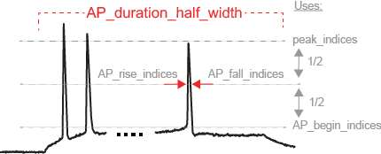

Generate Reproducible & Live HTML and PDF Conference Posters Using RMarkdown
Professor Rick Gerkin1,  , Professor Sharon Crook2, Russell Jarvis3
, Professor Sharon Crook2, Russell Jarvis3
1 Department of Earth Science, Brock University
2 Department of Graphics and Layouts, University of Posters; Canada
3 Department of Life Sciences, Arizona State University, ASU
Introduction
Welcome to posterdown ! This is my attempt to provide a semi-smooth workflow for those who wish to take their R Markdown skills to the conference world. Most features from R Markdown are available in this package such as Markdown section notation, figure captioning, and even citations like this one (Allaire et al. 2020). The rest of this example poster will show how you can insert typical conference poster features into your own document.
Objectives
- Easy to use reproducible poster design.
- Integration with R Markdown.
- Easy transition from
posterdowntopagedownreport or manuscript documents (Xie, Lesur, and Thorne 2020).
MODELING METHODS
Publications Associated with Model Sources:
| Large Scale Model | Blue Brain Project (1035) | Gouwens et al (2018) [6] |
|---|---|---|
| Publication | Markram et al (2015) [8] | Gouwens et al (2018) [6] |
Feature Sources:
| Feature1 | Feature2 | Feature3 |
|---|---|---|
| Ephys Feature Extraction Library | allensdk.ephys.ephys_features | Druckmann et al. (2012) [3] |
Virtual Experiment Three Step Protocol Stimulate for 2s
| Injection 1 | Injection 2 | Injection 3 |
|---|---|---|
| at 1.0×Rheobase | at 1.5×Rheobase | at 3.0×Rheobase |
Results
Usually you want to have a nice table displaying some important results that you have calculated. In posterdown this is as easy as using the kable table formatting you are probably use to as per typical R Markdown formatting.

Next Steps
Aliquam sed faucibus risus, quis efficitur erat. Vestibulum semper mauris quis tempus eleifend. Aliquam sagittis dictum ipsum, quis viverra ligula eleifend ut. Curabitur sagittis vitae arcu eget faucibus. In non elementum felis. Duis et aliquam nunc. Nunc pulvinar sapien nunc, vel pretium nisi efficitur in. Fusce fringilla maximus leo et maximus. Fusce at ligula laoreet, iaculis mi at, auctor odio. Praesent sed elementum justo. Aenean consectetur risus rhoncus tincidunt efficitur. Praesent dictum mauris at diam maximus maximus (Thorne 2019).
Conclusion
Try posterdown out! Hopefully you like it!
References
Allaire, JJ, Yihui Xie, Jonathan McPherson, Javier Luraschi, Kevin Ushey, Aron Atkins, Hadley Wickham, Joe Cheng, Winston Chang, and Richard Iannone. 2020. Rmarkdown: Dynamic Documents for R. https://CRAN.R-project.org/package=rmarkdown.
Thorne, Brent. 2019. Posterdown: Generate Pdf Conference Posters Using R Markdown. https://CRAN.R-project.org/package=posterdown.
Xie, Yihui, Romain Lesur, and Brent Thorne. 2020. Pagedown: Paginate the Html Output of R Markdown with Css for Print. https://CRAN.R-project.org/package=pagedown.